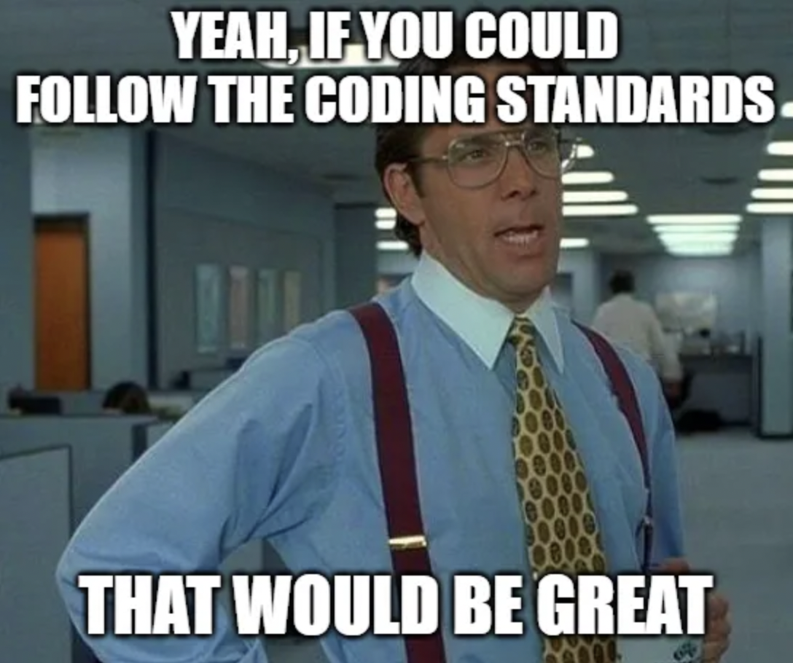

We all know the pain of having errors, bugs, and inconsistencies in JavaScript. After using the tool ESLint with IntelliJ, it made my life simplier and saved me a ton of time. For those who dont know that ESLint is, its a static code analysis tool that checks JavaScript code for common problems such as errors, indentation issues, and many more with Node.js installed. I’ve learned that code standards are important because it makes it easier for other programmers to read and understand your code. It gives an appealing and uniform apperance to the code. By using ESLint, it ensures that the code is consistent and that it follows the same structure and format throughout the whole program while creating cleaner, more efficient code
By using ESLint, I find the green check mark very useful because it shows that nothing went wrong in the code. For some people, it is a bit irritating to see red errors in the code, many peeple see it as trivial. It makes me feel accomplished and relieved in the inside which every coder wants to feel. ESLint is nitorious for detecting errors and giving great suggestions on how fix it. When ESLint throws you an error and you dont know how to fix it, it automatically gives you a suggestion. It’s like a spell check for code. It’s very beginner friendly and easy to use if you have no idea what to do next. Taking advantage of this tool will help you become a better programmer and will help you learn from your mistakes.
If I were to read code that had messy indentation, I would have been very confused on where the statement ends and would not want to read it. Code should be easily understandable and readable. This isn’t the first time I was introduced to a “coding standard” before, it was required in a previous college class with JGrasp. It worked fairly similar to ESLint but I found ESLint to be more user friendly and easier to use. I’m glad that I was introduced to this tool because I believe it will help me in the long run when I apply for tech jobs. I’m sure that most companies use this tool to check for errors and to make sure that the code is consistent. I feel like having a coding standard is a blessing in diguise.